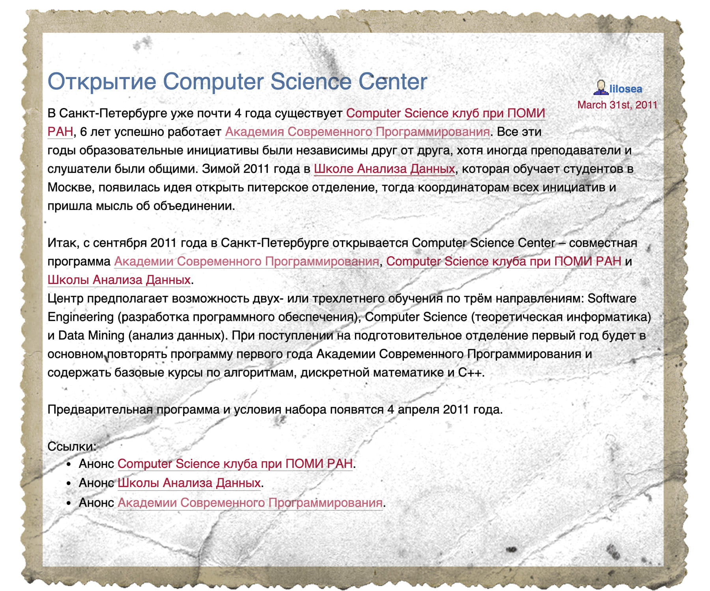
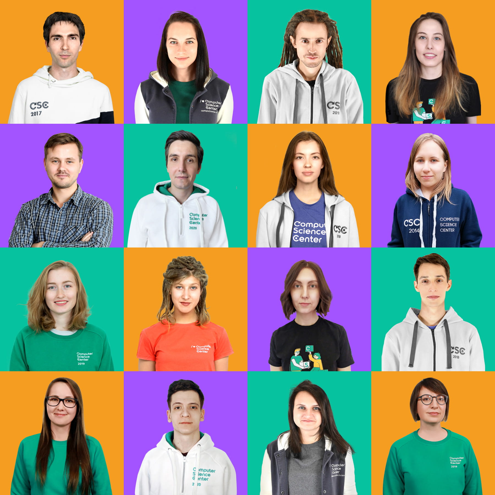

Как это было
Организаторы
31 марта 2011 года в ЖЖ появилось объявление об открытии Computer Science Center в Санкт-Петербурге.
Проект появился на базе Академии современного программирования и Computer Science клуба в сотрудничестве со Школой анализа данных. После создания CS центра Академия современного программирования стала его частью, CS клуб продолжает существовать как самостоятельная активность: курсы клуба открыты для всех желающих, а для студентов центра они входят в программу обучения как курсы по выбору.
Центр был создан при активном участии учредителей
- Елена Бунина (Яндекс, ШАД, МГУ);
- Андрей Иванов (JetBrains);
- Александр Куликов (ПОМИ РАН, CS клуб);
- Александр Смаль (ПОМИ РАН, СПбАУ РАН);
- Евгения Куликова (Яндекс).
С момента создания основную поддержку центру оказывают Яндекс, JetBrains, Антон Лиходедов и Юрий Богданов. Отдельная благодарность Якову Зайцеву, подарившему CS центру более 100 книг, и Максиму Яковлевичу Пратусевичу — директору ФМЛ 239, где долгое время проходили почти все занятия центра.
Команда продолжает пополняться новыми людьми и ролями. Сейчас над проектами центра работают совет CS центра, кураторы обучения в Санкт-Петербурге и в Новосибирске, кураторы Школы управления продуктом, команда разработки LMS, дизайнеры и видеомонтажёры.
Совет CS центра
JetBrains
ПОМИ РАН, CS клуб
Яндекс
Команда CS центра
Студенты
25 апреля 2011 года начался набор студентов на обучение. Поступающие заполняли анкету на сайте, проходили тестирование и встречались с организаторами на собеседовании. Общий процесс набора таким и остался, а детали всё время меняются. Мы пробовали засчитывать онлайн-курс по алгоритмам как результат второго этапа и сразу приглашать на собеседование. Проводили письменные экзамены и онлайн, на платформах Stepik и Яндекс.Контест. Обновляли программу обучения, выпускали материалы для подготовки, проводили дни открытых дверей и сессии ответов на вопросы.
Каждый год, в марте, разворачивается PR-программа: мы стараемся сделать так, чтобы о центре узнали как можно больше людей и те, кому это обучение действительно нужно, присоединились к другим студентам в новом учебном году.
Направления обучения
Центр набирал студентов по трём направлениям: Computer Science, Data Mining и Software Engineering. С тех пор направления Data Mining и Computer Science обновили свои названия: Data Science сменило Data Mining, а «современная информатика» заменила «теоретическую» в русской версии. Новые направления в центре: онлайн-курсы с 2014 года, онлайн-программы с 2016 года, заочное обучение в 2019 и дистанционный формат основной программы в 2021 году, Школа управления продуктами с 2019 года, направление обучения Robotics при поддержке Газпромнефть с 2021 года.
Преподаватели и курсы
Первая встреча с организаторами и будущими преподавателями CS центра состоялась 20 мая 2011 года. Презентация центра в ФМЛ 239 — большое событие, ставшее началом и днём рождения.
Именно в здании ФМЛ 239 проходили все первые занятия. Позже курс по машинному обучению читался в офисе Яндекса, курсы постепенно переезжали в офис JetBrains в БЦ «Таймс». Сейчас там проходят все лекции и семинары центра в Санкт-Петербурге, место занятий в Новосибирске — новый корпус НГУ.
С первых лекций и семинаров в центре преподают увлечённые своим делом люди. Они рады обратной связи от студентов, следят за трендами в образовании, используют новые инструменты и постоянно обновляют программы курсов.
Выпускники
1 сентября 2011 года начали обучение 95 студентов. Часть из них перешли из Академии современного программирования. Именно эти ребята позже стали первым выпуском CS центра. Так появилась одна из традиций — отмечать конец учебного года и чествовать выпускников выездом на природу: шашлыки, настольные игры, удобная одежда, выдача дипломов и толстовок, речи организаторов, квест на сто человек и обязательно общая фотография.